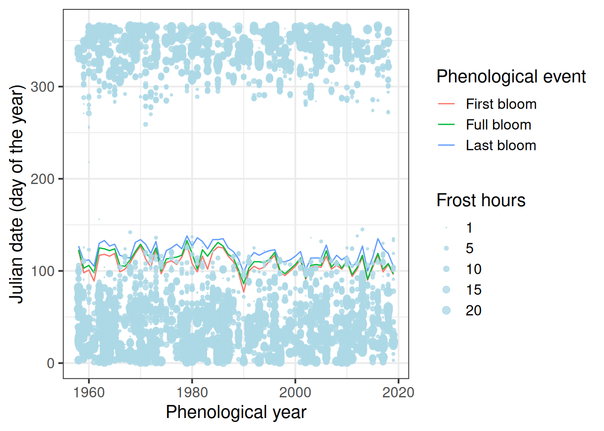
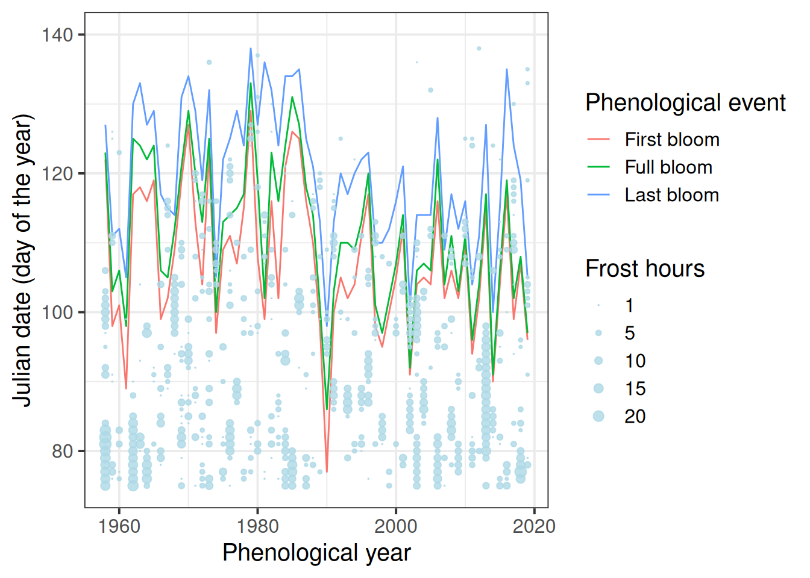

Chapter 33 Frost risk analysis
Learning goals for this lesson
- Appreciate the danger of spring frost for orchard crops
- Learn how to plot bloom data over time
- Consolidate skills from earlier lessons by defining a temperature response model and applying it to a temperature dataset
- Evaluate frost occurrence at a location
- Plot frost occurrences in relation to bloom dates
- Quantitatively evaluate long-term trends in the risk of frost events during bloom
33.1 Spring frost
Today we’ll look at an application of some of the procedures we looked at. The challenge we’re addressing is the risk of spring frost during flowering. After budbreak, trees are very sensitive to frost, and especially the emerging flowers can be severely damaged by freezing temperatures. As you (should) know, all tree fruits develop from flowers, so severely damaged flowers is bad news. In fact, spring frost events at an unfortunate time can lead to complete crop failure in many orchard crops. The following table illustrates the extent of such losses:
A serious spring frost event in April of 2017, with several consecutive nights of considerable frost (around -5°C) led to strong reductions in the number of viable flowers, which translated into very low final yields. This event caused serious hardship for many fruit growers. Even though this was surely not the first such event ever recorded, it raised concerns about the possible impact of climate change on the risk of frost damage.
In this day and age, whenever an unusual weather event happens, we quickly jump to the conclusion that climate change may be at play. This may often be a correct guess, but of course weather has always been variable, with a certain interannual variation being part of our ‘normal’ climate. A critical question in this context is whether 2017 was a freak outlier event or a harbinger of a ‘new normal’, where growers will suffer increasingly from losses due to spring frost events. This is the question we’re trying to address today.
The reason why answering this question is worth a bit of effort is that the risk of spring frost should factor into two important strategic decisions in fruit production:
- Investment in frost protection: Growers can protect themselves from frost damage by choosing among a limited number of frost protection strategies. In most settings, the most effective strategy is the use of frost protection sprinklers, but some growers also use ‘candles’ or wind machines (incl. in some cases helicopters). Each of these strategies requires investing in infrastructure or other materials (such as candles), which will only produce benefits in years with spring frost events. The profitability of such investments thus depends strongly on the likelihood of such events.
- Cultivar choice: Some tree species or cultivars flower early, and some flower late. Obviously, late-flowering cultivars usually have a lower risk of suffering from spring frost damage than early-flowering ones. However, their fruits may also tend to mature later, at a time when market prices are low, or there may be other reasons for wanting to plant trees with early bloom dates. Also for this decision, knowledge of the risk of spring frost would be very helpful.
So let’s see how we can address this. We’ll be focusing on the experimental station of the University of Bonn at Klein-Altendorf. Here it is:
leaflet() %>%
setView(lng = 6.99,
lat = 50.625,
zoom=12) %>%
addTiles() %>%
addMarkers(lng = 6.99,
lat = 50.625,
popup = "Campus Klein-Altendorf")Figure 33.1: Location of Campus Klein-Altendorf, an experimental station of the University of Bonn
By the way, it took me just about 1 minute to find out, using just an internet search engine, how to include an interactive map in a markdown document. This is how easy it is to get impressive things done in markdown (sometimes)!
One of the remarkable features of this experimental station is that a few generations of technical staff have been diligently recording phenology data since the 1950s. We also have very good weather data for this entire period. Let’s use this information and the knowledge we’ve already gained in this module to produce a state-of-the-art frost risk assessment (focusing for now only on historic data).
Let’s first load long-term weather and bloom datasets into R.
Please download the files and save them in your data directory. Now we can load them.
CKA_Alexander_Lucas <- read_tab("data/Alexander_Lucas_bloom_1958_2019.csv")
CKA_weather <- read_tab("data/TMaxTMin1958-2019_patched.csv")The CKA_weather dataset looks like the patched weather datasets we’ve seen before.
33.2 Phenology trend analysis
Here’s what the bloom dataset CKA_Alexander_Lucas looks like:
| Pheno_year | First_bloom | Full_bloom | Last_bloom |
|---|---|---|---|
| 1958 | 19580502 | 19580503 | 19580507 |
| 1959 | 19590408 | 19590413 | 19590421 |
| 1960 | 19600410 | 19600415 | 19600421 |
| 1961 | 19610330 | 19610408 | 19610415 |
| 1962 | 19620427 | 19620505 | 19620510 |
| 1963 | 19630428 | 19630504 | 19630513 |
We’ll want to plot this with ggplot again later, and by now you may have a good idea of what type of data structure can most effectively do this. We’ll use the pivot_longer function to get our data.frame into the right structure. We’ll also calculate our usual Year, Month and Day columns. Finally, we’ll use a special chillR function (make_JDay) that adds the Julian date to the data.frame. The Julian date is simply the day of the year, i.e. a Julian date of 1 corresponds to \(1^{st}\) January, 2 to \(2^{nd}\) January, and 32 to \(1^{st}\) February etc.
library(tidyverse)
Alexander_Lucas <-
CKA_Alexander_Lucas %>%
pivot_longer(cols = "First_bloom":"Last_bloom",
names_to = "variable",
values_to="YEARMODA") %>%
mutate(Year = as.numeric(substr(YEARMODA, 1, 4)),
Month = as.numeric(substr(YEARMODA, 5, 6)),
Day = as.numeric(substr(YEARMODA, 7, 8))) %>%
make_JDay() | Pheno_year | variable | YEARMODA | Year | Month | Day | JDay |
|---|---|---|---|---|---|---|
| 1958 | First_bloom | 19580502 | 1958 | 5 | 2 | 122 |
| 1958 | Full_bloom | 19580503 | 1958 | 5 | 3 | 123 |
| 1958 | Last_bloom | 19580507 | 1958 | 5 | 7 | 127 |
| 1959 | First_bloom | 19590408 | 1959 | 4 | 8 | 98 |
| 1959 | Full_bloom | 19590413 | 1959 | 4 | 13 | 103 |
We can now plot bloom dates for the historic record:
ggplot(data = Alexander_Lucas,
aes(Pheno_year,
JDay,
col = variable)) +
geom_line() +
theme_bw(base_size = 15) +
scale_color_discrete(
name = "Phenological event",
labels = c("First bloom",
"Full bloom",
"Last bloom")) +
xlab("Phenological year") +
ylab("Julian date (day of the year)")It’s a bit hard to see what’s going on here, so let’s add a regression line. ggplot has a convenient function for this. We can even add a standard error to the line:
ggplot(data = Alexander_Lucas,
aes(Pheno_year,
JDay,
col = variable)) +
geom_line() +
theme_bw(base_size = 15) +
scale_color_discrete(name = "Phenological event",
labels = c("First bloom",
"Full bloom",
"Last bloom")) +
xlab("Phenological year") +
ylab("Julian date (day of the year)") +
geom_smooth(method = "lm")
We could also use the geom_smooth method to display the data.
ggplot(data=Alexander_Lucas,aes(Pheno_year,JDay,col=variable)) +
geom_smooth() +
theme_bw(base_size=15) +
scale_color_discrete(
name = "Phenological event",
labels = c("First bloom", "Full bloom", "Last bloom")) +
xlab("Phenological year") +
ylab("Julian date (day of the year)") Looks like we have a trend here, but how can we be sure? The Kendall test is a pretty good tool for testing time series for trends:
require(Kendall)
Kendall_first <-
Kendall(x = Alexander_Lucas$Pheno_year[
which(Alexander_Lucas$variable == "First_bloom")],
y = Alexander_Lucas$JDay[
which(Alexander_Lucas$variable == "First_bloom")])
Kendall_full <-
Kendall(x = Alexander_Lucas$Pheno_year[
which(Alexander_Lucas$variable == "Full_bloom")],
y = Alexander_Lucas$JDay[
which(Alexander_Lucas$variable == "Full_bloom")])
Kendall_last <-
Kendall(x = Alexander_Lucas$Pheno_year[
which(Alexander_Lucas$variable == "Last_bloom")],
y = Alexander_Lucas$JDay[
which(Alexander_Lucas$variable == "Last_bloom")])
Kendall_first## tau = -0.186, 2-sided pvalue =0.03533## tau = -0.27, 2-sided pvalue =0.0021401## tau = -0.233, 2-sided pvalue =0.0083237This test is a rank correlation test, which focuses on how often a value increases or decreases from one year to the next. If we overwhelmingly have movement in one direction, as is the case here, we have a significant trend. The 2-sided p-value given here can be interpreted like the usual p values we’re used to. In all cases, these values are <0.05, so we can be pretty sure that we have a trend here. The tau value is negative, meaning that we have a decreasing (bloom-advancing) trend.
Maybe we’re also interested in the strength of the trend. The Kendall test doesn’t give us that information, and we may need to assume that our data can be described by some sort of mathematical function. Let’s do what most people do and assume a linear model.
linear_trend_first <- lm(
Alexander_Lucas$JDay[
which(Alexander_Lucas$variable == "First_bloom")]~
Alexander_Lucas$Pheno_year[
which(Alexander_Lucas$variable == "First_bloom")])
linear_trend_full <- lm(
Alexander_Lucas$JDay[
which(Alexander_Lucas$variable == "Full_bloom")]~
Alexander_Lucas$Pheno_year[
which(Alexander_Lucas$variable == "First_bloom")])
linear_trend_last <- lm(
Alexander_Lucas$JDay[
which(Alexander_Lucas$variable == "Last_bloom")]~
Alexander_Lucas$Pheno_year[
which(Alexander_Lucas$variable == "First_bloom")])
linear_trend_first##
## Call:
## lm(formula = Alexander_Lucas$JDay[which(Alexander_Lucas$variable ==
## "First_bloom")] ~ Alexander_Lucas$Pheno_year[which(Alexander_Lucas$variable ==
## "First_bloom")])
##
## Coefficients:
## (Intercept)
## 429.1662
## Alexander_Lucas$Pheno_year[which(Alexander_Lucas$variable == "First_bloom")]
## -0.1618##
## Call:
## lm(formula = Alexander_Lucas$JDay[which(Alexander_Lucas$variable ==
## "Full_bloom")] ~ Alexander_Lucas$Pheno_year[which(Alexander_Lucas$variable ==
## "First_bloom")])
##
## Coefficients:
## (Intercept)
## 569.6720
## Alexander_Lucas$Pheno_year[which(Alexander_Lucas$variable == "First_bloom")]
## -0.2305##
## Call:
## lm(formula = Alexander_Lucas$JDay[which(Alexander_Lucas$variable ==
## "Last_bloom")] ~ Alexander_Lucas$Pheno_year[which(Alexander_Lucas$variable ==
## "First_bloom")])
##
## Coefficients:
## (Intercept)
## 485.9785
## Alexander_Lucas$Pheno_year[which(Alexander_Lucas$variable == "First_bloom")]
## -0.1841What we have to look at is the second model coefficient, which is -0.16 for first bloom, -0.23 for full bloom and -0.18 for last bloom. Such shifts are often specified per decade, so we’ll have to multiply by a factor of 10. Let’s collect all our trend results:
phenology_trends <-
data.frame(Stage = c("First bloom",
"Full bloom",
"Last bloom"),
Kendall_tau = c(round(Kendall_first[[1]][1],3),
round(Kendall_full[[1]][1],3),
round(Kendall_last[[1]][1],3)),
Kendall_p = c(round(Kendall_first[[2]][1],3),
round(Kendall_full[[2]][1],3),
round(Kendall_last[[2]][1],3)),
Linear_trend_per_decade =
c(round(linear_trend_first[[1]][2],2) * 10,
round(linear_trend_full[[1]][2],2) * 10,
round(linear_trend_last[[1]][2],2) * 10)
)| Stage | Kendall_tau | Kendall_p | Linear_trend_per_decade |
|---|---|---|---|
| First bloom | -0.186 | 0.035 | -1.6 |
| Full bloom | -0.270 | 0.002 | -2.3 |
| Last bloom | -0.233 | 0.008 | -1.8 |
33.3 Frost risk
To analyze the frost risk, we first need a frost model. We’re going to keep this relatively simple and just count any hour with temperatures <0°C as a frost hour. In reality, the story is a bit more complicated, because as buds break out of dormancy, they gradually become more sensitive to frost. Fully dormant buds can withstand rather deep freezes (in many species), and this hardiness gradually diminishes as phenological development resumes in spring. We’ll stick to a simple model for now.
We’ve built simple temperature models before, so this shouldn’t be a big problem for us. As a reminder, we can call up the help file of step_model for guidance.
frost_df = data.frame(
lower = c(-1000, 0),
upper = c(0, 1000),
weight = c(1, 0))
frost_model <- function(x) step_model(x,
frost_df)Now we can apply this model to the historic record, after converting the temperature record to hourly values:
hourly <- stack_hourly_temps(CKA_weather,
latitude = 50.625)
frost <- tempResponse(hourly,
models = c(frost = frost_model))
ggplot(frost,
aes(End_year,
frost)) +
geom_smooth() +
geom_point() +
ylim(c(0, NA)) +
ylab("Frost hours per year") +
xlab("Year")What we see clearly here is that the number of frost hours has decreased quite strongly at Klein-Altendorf. Let’s calculate the same statistics as before:
## tau = -0.179, 2-sided pvalue =0.041862##
## Call:
## lm(formula = frost$frost ~ frost$End_year)
##
## Coefficients:
## (Intercept) frost$End_year
## 11172.57 -5.19So on average, assuming a linear decline, we’ve lost about -5.2 frost hours per year! You can probably see how we could easily make historic scenarios of frost hour numbers using the functions we learned about in previous lessons.
But here we’re not really interested in how many frost hours we’ve had - we want to know if our pear trees have been affected by spring frost. For this we don’t need this aggregation for the whole year - we need daily data of frost occurrence that we can then compare with bloom dates. For this, we need a slightly different version of our frost model:
frost_model_no_summ <-
function(x) step_model(x,
frost_df,
summ=FALSE)
hourly$hourtemps[, "frost"] <- frost_model_no_summ(hourly$hourtemps$Temp)
Daily_frost_hours <- aggregate(hourly$hourtemps$frost,
by = list(hourly$hourtemps$YEARMODA),
FUN = sum)
Daily_frost <- make_JDay(CKA_weather)
Daily_frost[, "Frost_hours"] <- Daily_frost_hours$xHere is what just happened: To actually find out whether an individual hour has frost or not, we need a frost model that doesn’t automatically add up all frost hours that accumulate. To achieve this, we have to get back into the step_model function and set the parameter summ to FALSE. We can apply the resulting model directly to the hourly temperatures.
We probably shouldn’t plot the data by hour, but rather by day, so we need to summarize the hourly data. This can be achieved with the aggregate function, which can sum up values for all rows in a particular data.frame column that meet certain criteria (the function is actually more general than that, but this is all we need here).
We then take our CKA_weather data.frame, add Julian dates to it (make_JDay), and place our daily frost hour data into a new column.
Now we’re ready to plot the results. We should find a way to put this into the same plot as our bloom data, so let’s try to use the same axes: Year and JDay. We also wanted to show the number of frost hours of course, so let’s indicate this by using dots of variable size. Since I couldn’t quite figure out how to not show days with 0 frost hours, we should first set the Frost_hours for the respective days to NA. Here’s how this can be achieved with ggplot:
Daily_frost$Frost_hours[which(Daily_frost$Frost_hours == 0)] <- NA
ggplot(data = Daily_frost,
aes(Year,
JDay,
size = Frost_hours)) +
geom_point(col = "light blue",
alpha = 0.8) +
scale_size(range = c(0, 3),
breaks = c(1, 5, 10, 15, 20),
labels = c("1", "5", "10", "15", "20"),
name = "Frost hours") +
theme_bw(base_size = 15)And now let’s try to plot this in the same figure as the bloom dates:
ggplot(data = Alexander_Lucas,
aes(Pheno_year,
JDay,
col = variable)) +
geom_line() +
theme_bw(base_size = 15) +
scale_color_discrete(
name = "Phenological event",
labels = c("First bloom",
"Full bloom",
"Last bloom")) +
xlab("Phenological year") +
ylab("Julian date (day of the year)") +
geom_point(data = Daily_frost,
aes(Year,
JDay,
size = Frost_hours),
col = "light blue",
alpha = 0.8) +
scale_size(range = c(0, 3),
breaks = c(1, 5, 10, 15, 20),
labels = c("1", "5", "10", "15", "20"),
name = "Frost hours") +
theme_bw(base_size = 15)
Hard to see anything here. We’re really only interested in spring, so let’s only show data for that period:
ggplot(data = Alexander_Lucas,
aes(Pheno_year,
JDay,
col = variable)) +
geom_line() +
theme_bw(base_size = 15) +
scale_color_discrete(
name = "Phenological event",
labels = c("First bloom",
"Full bloom",
"Last bloom")) +
xlab("Phenological year") +
ylab("Julian date (day of the year)") +
geom_point(data = Daily_frost,
aes(Year,
JDay,
size = Frost_hours),
col = "light blue",
alpha = 0.8) +
scale_size(range = c(0, 3),
breaks = c(1, 5, 10, 15, 20),
labels = c("1", "5", "10", "15", "20"),
name = "Frost hours") +
theme_bw(base_size = 15) +
ylim(c(75, 140))
Still hard to see. We need a better way to show the bloom dates. Let’s try a ribbon for the total bloom duration and a line for full bloom. That requires a bit of restructuring.
Ribbon_Lucas <-
Alexander_Lucas %>%
select(Pheno_year, variable, JDay) %>%
pivot_wider(names_from = "variable", values_from = "JDay")
ggplot(data = Ribbon_Lucas,
aes(Pheno_year)) +
geom_ribbon(aes(ymin = First_bloom,
ymax = Last_bloom),
fill = "light gray") +
geom_line(aes(y = Full_bloom)) +
theme_bw(base_size = 15) +
xlab("Phenological year") +
ylab("Julian date (day of the year)") +
geom_point(data = Daily_frost,
aes(Year,
JDay,
size = Frost_hours),
col = "light blue",
alpha = 0.8) +
scale_size(range = c(0, 3),
breaks = c(1, 5, 10, 15, 20),
labels = c("1", "5", "10", "15", "20"),
name = "Frost hours") +
theme_bw(base_size = 15) +
ylim(c(75, 140))It’s still a bit hard to see when frost events coincided with bloom. Let’s try to point this out more clearly by adding color.
# identify frost events that overlap with bloom
lookup_dates <- Ribbon_Lucas
row.names(lookup_dates) <- lookup_dates$Pheno_year
Daily_frost[, "First_bloom"]<-
lookup_dates[as.character(Daily_frost$Year),
"First_bloom"]
Daily_frost[, "Last_bloom"]<-
lookup_dates[as.character(Daily_frost$Year),
"Last_bloom"]
Daily_frost[which(!is.na(Daily_frost$Frost_hours)),
"Bloom_frost"] <-
"Before bloom"
Daily_frost[which(Daily_frost$JDay >= Daily_frost$First_bloom),
"Bloom_frost"]<-
"During bloom"
Daily_frost[which(Daily_frost$JDay > Daily_frost$Last_bloom),
"Bloom_frost"]<-
"After bloom"
Daily_frost[which(Daily_frost$JDay > 180),
"Bloom_frost"]<-
"Before bloom"
ggplot(data = Ribbon_Lucas,
aes(Pheno_year)) +
geom_ribbon(aes(ymin = First_bloom,
ymax = Last_bloom),
fill = "light gray") +
geom_line(aes(y = Full_bloom)) +
theme_bw(base_size = 15) +
xlab("Phenological year") +
ylab("Julian date (day of the year)") +
geom_point(data = Daily_frost,
aes(Year,
JDay,
size = Frost_hours,
col = Bloom_frost),
alpha = 0.8) +
scale_size(range = c(0, 5),
breaks = c(1, 5, 10, 15, 20),
labels = c("1", "5", "10", "15", "20"),
name = "Frost hours") +
scale_color_manual(
breaks = c("Before bloom",
"During bloom",
"After bloom"),
values = c("light green",
"red",
"light blue"),
name = "Frost timing") +
theme_bw(base_size = 15) +
ylim(c(75, 140))Now let’s see if there’s been a long-term trend in the number of frost hours during bloom:
Bloom_frost_trend <-
aggregate(
Daily_frost$Frost_hours,
by = list(Daily_frost$Year,
Daily_frost$Bloom_frost),
FUN = function(x) sum(x,
na.rm = TRUE))
colnames(Bloom_frost_trend) <- c("Year",
"Frost_timing",
"Frost_hours")
DuringBloom<-
Bloom_frost_trend[
which(Bloom_frost_trend$Frost_timing == "During bloom"),]
ggplot(data = DuringBloom,
aes(Year,
Frost_hours)) +
geom_col() It’s a bit hard to see whether there’s a trend here. Let’s do some statistics again:
## tau = 0.0834, 2-sided pvalue =0.3797##
## Call:
## lm(formula = DuringBloom$Frost_hours ~ DuringBloom$Year)
##
## Coefficients:
## (Intercept) DuringBloom$Year
## -159.07879 0.08302So the slope of this regression indicates an average increase by 0.08 frost hours during bloom each year. However, the Kendall test did not consider this a significant trend.
Exercises on frost risk analysis
Please document all results of the following assignments in your learning logbook.
- Download the phenology dataset for the apple cultivar Roter Boskoop from Klein-Altendorf.
- Illustrate the development of the bloom period over the duration of the weather record. Use multiple ways to show this - feel free to be creative.
- Evaluate the occurrence of frost events at Klein-Altendorf since 1958. Illustrate this in a plot.
- Produce an illustration of the relationship between spring frost events and the bloom period of ‘Roter Boskoop’.
- Evaluate how the risk of spring frost for this cultivar has changed over time. Has there been a significant trend?